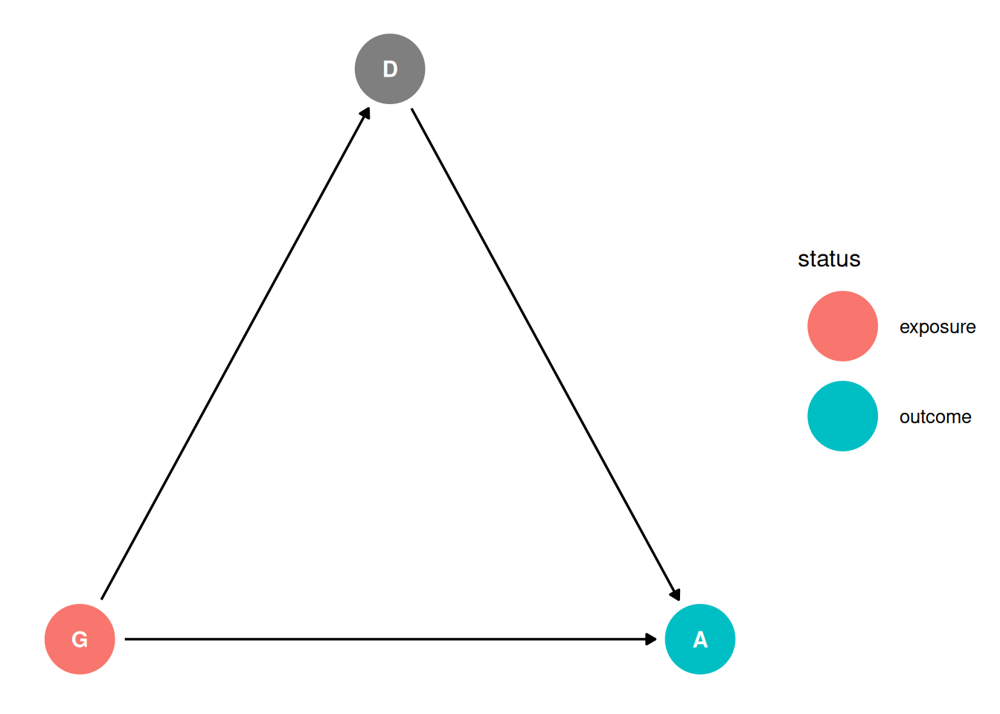
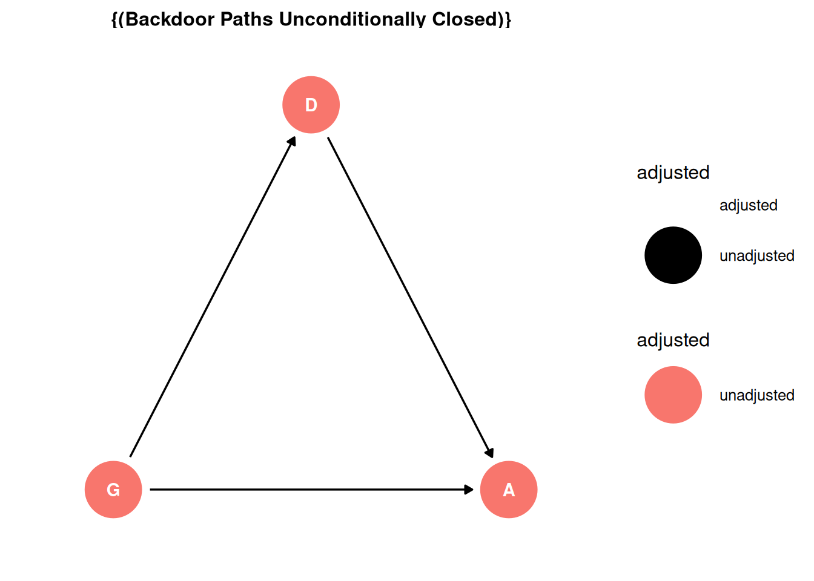
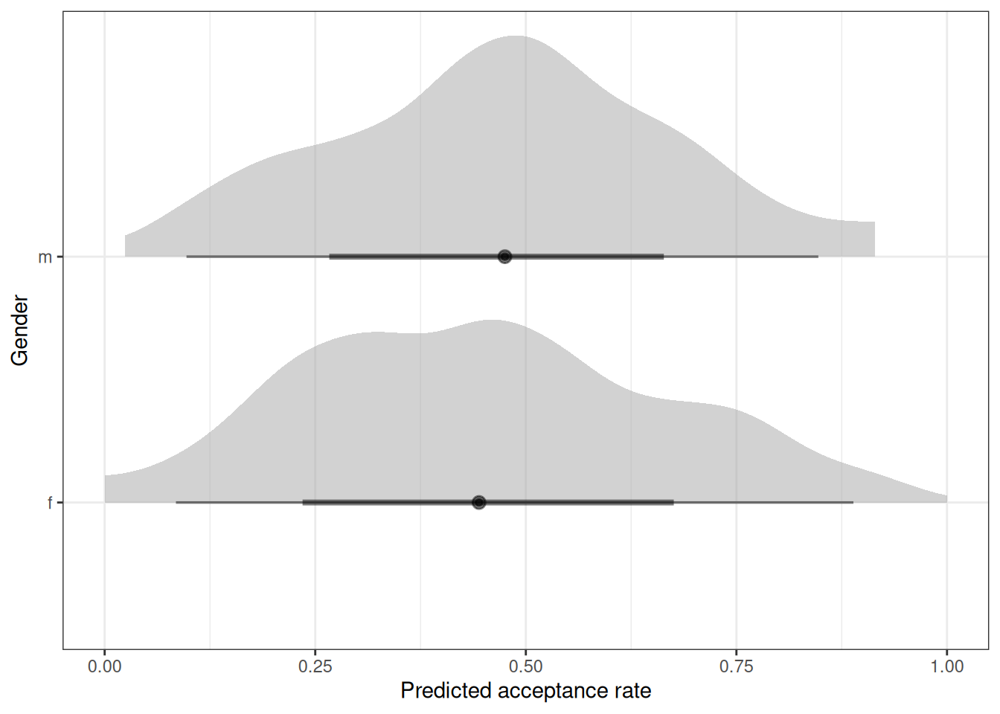
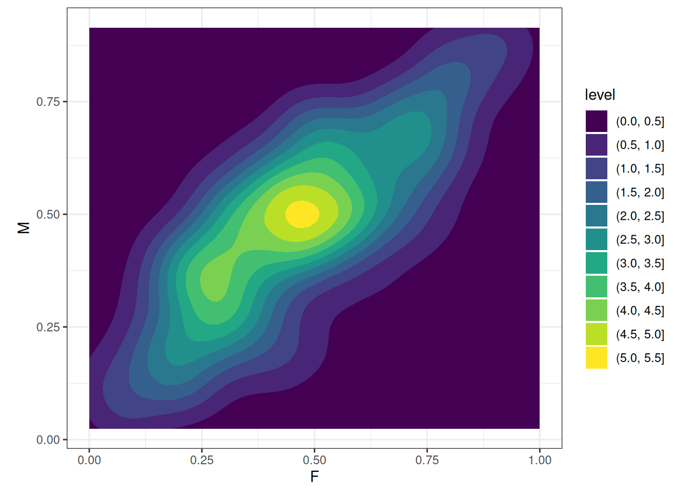
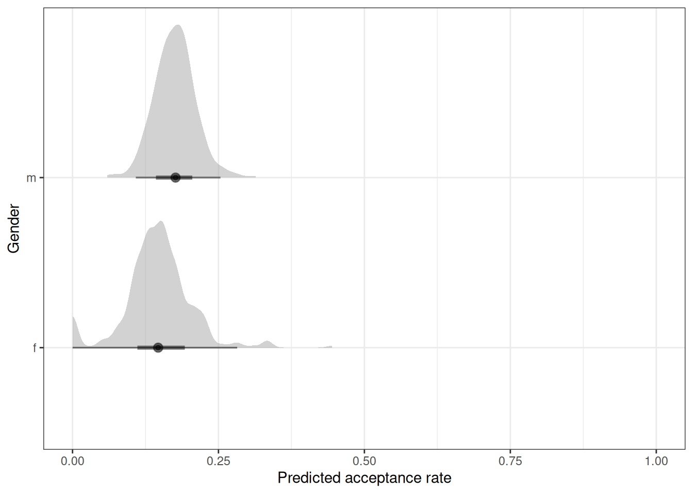
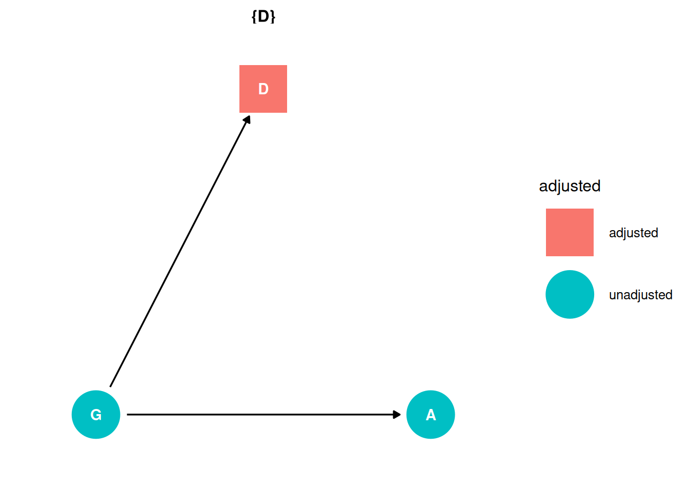
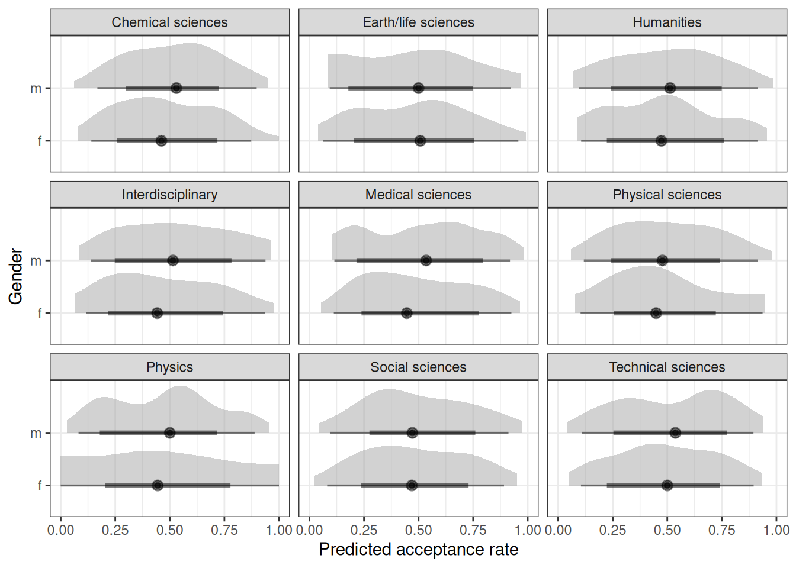
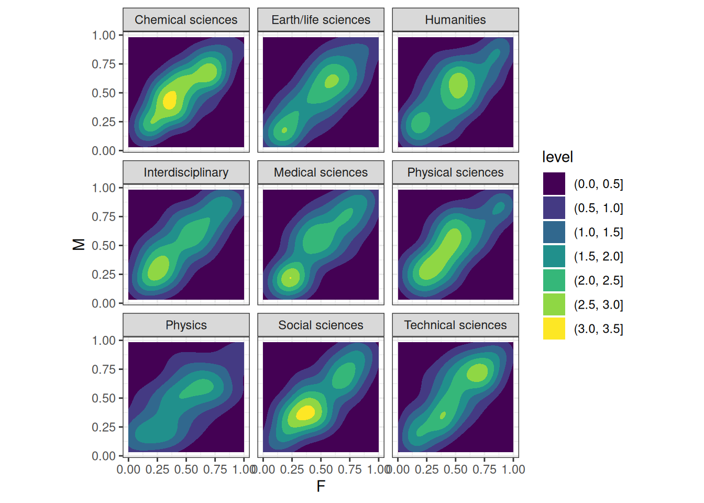
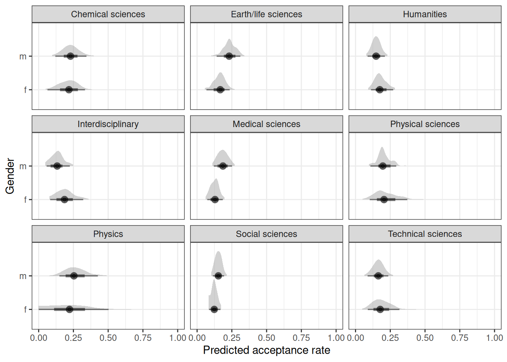
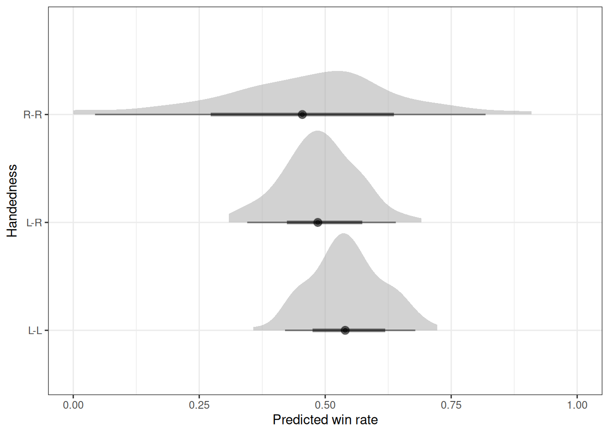

targets::tar_source('R')Homework 05
Setup
Question 1
The data in data(NWOGrants) are outcomes for scientific funding applications for the Netherlands Organization for Scientific Research (NWO) from 2010–2012 (see van der Lee and Ellemers doi:10.1073/pnas.1510159112). These data have a structure similar to the UCBAdmit data discussed in Chapter 11 and in lecture. There are applications and each has an associated gender (of the lead researcher). But instead of departments, there are disciplines. Draw a DAG for this sample. Then use the backdoor criterion and a binomial GLM to estimate the TOTAL causal effect of gender on grant awards.
Estimand
What is the total causal effect of gender on grant awards?
Scientific model
dag <- dagify(
D ~ G,
A ~ G + D,
coords = coords,
exposure = 'G',
outcome = 'A'
)
ggdag_status(dag, seed = 2, layout = 'auto') + theme_dag()
Backdoor criterion
- Identify all paths connecting treatment to the outcome, regardless of the direction of arrows
G -> AG -> D -> A
- Identify paths with arrows entering the treatment (backdoor). These are non-casual paths, because causal paths exit the treatment (frontdoor).
G -> AG -> D -> A
- Find adjustment sets that close all backdoor/non-causal paths.
There are no backdoor paths entering the treatment (G). There is a direct path from G -> A and an indirect path through D. The adjustment set for the total effect is empty.
ggdag_adjustment_set(dag, effect = 'total') + theme_dag()
Prior predictive simulation
# Load data
tar_load(grants)
# Print priors used
tar_read(h05_q01_brms_prior) prior class coef group resp dpar nlpar lb ub source
normal(0, 1) Intercept <NA> <NA> user
normal(0, 0.5) b <NA> <NA> user# Load model
tar_load(h05_q01_brms_sample_prior)Warning in qs::qread(file = path, use_alt_rep = TRUE): PROMSXP detected,
replacing with NULL (see https://github.com/traversc/qs/issues/93)
Warning in qs::qread(file = path, use_alt_rep = TRUE): PROMSXP detected,
replacing with NULL (see https://github.com/traversc/qs/issues/93)
Warning in qs::qread(file = path, use_alt_rep = TRUE): PROMSXP detected,
replacing with NULL (see https://github.com/traversc/qs/issues/93)
Warning in qs::qread(file = path, use_alt_rep = TRUE): PROMSXP detected,
replacing with NULL (see https://github.com/traversc/qs/issues/93)
Warning in qs::qread(file = path, use_alt_rep = TRUE): PROMSXP detected,
replacing with NULL (see https://github.com/traversc/qs/issues/93)
Warning in qs::qread(file = path, use_alt_rep = TRUE): PROMSXP detected,
replacing with NULL (see https://github.com/traversc/qs/issues/93)
Warning in qs::qread(file = path, use_alt_rep = TRUE): PROMSXP detected,
replacing with NULL (see https://github.com/traversc/qs/issues/93)
Warning in qs::qread(file = path, use_alt_rep = TRUE): PROMSXP detected,
replacing with NULL (see https://github.com/traversc/qs/issues/93)h05_q01_brms_sample_prior Family: binomial
Links: mu = logit
Formula: awards | trials(applications) ~ gender
Data: h05_q01_brms_data (Number of observations: 18)
Draws: 4 chains, each with iter = 2000; warmup = 1000; thin = 1;
total post-warmup draws = 4000
Regression Coefficients:
Estimate Est.Error l-95% CI u-95% CI Rhat Bulk_ESS Tail_ESS
Intercept 0.00 1.03 -2.06 2.02 1.00 2813 2191
genderm 0.01 0.51 -0.95 0.98 1.00 2877 2447
Draws were sampled using sample(hmc). For each parameter, Bulk_ESS
and Tail_ESS are effective sample size measures, and Rhat is the potential
scale reduction factor on split chains (at convergence, Rhat = 1).# Read N draws from the priors and append expected predictions
n_draws <- 100
q01_pred_prior <- h05_q01_brms_sample_prior |>
add_predicted_draws(newdata = grants, ndraws = n_draws)
# Plot prior expectations for acceptance rate and gender
ggplot(q01_pred_prior) +
stat_halfeye(aes(.prediction / applications, gender), alpha = 0.5) +
labs(x = 'Predicted acceptance rate', y = 'Gender') +
xlim(0, 1)
# Compare estimates between gender
setDT(q01_pred_prior)
q01_pred_prior[, est := .prediction / applications]
q01_pred_prior_compare <- dcast(
q01_pred_prior,
.draw + discipline ~ gender,
value.var = 'est'
)
# Plot prior expectations comparing gender
ggplot(q01_pred_prior_compare) +
geom_density2d_filled(aes(f, m)) +
labs(x = 'F', y = 'M') +
scale_fill_viridis_d() +
coord_equal()
Analyze the data
# Load model
tar_load(h05_q01_brms_sample)Warning in qs::qread(file = path, use_alt_rep = TRUE): PROMSXP detected,
replacing with NULL (see https://github.com/traversc/qs/issues/93)
Warning in qs::qread(file = path, use_alt_rep = TRUE): PROMSXP detected,
replacing with NULL (see https://github.com/traversc/qs/issues/93)
Warning in qs::qread(file = path, use_alt_rep = TRUE): PROMSXP detected,
replacing with NULL (see https://github.com/traversc/qs/issues/93)
Warning in qs::qread(file = path, use_alt_rep = TRUE): PROMSXP detected,
replacing with NULL (see https://github.com/traversc/qs/issues/93)
Warning in qs::qread(file = path, use_alt_rep = TRUE): PROMSXP detected,
replacing with NULL (see https://github.com/traversc/qs/issues/93)
Warning in qs::qread(file = path, use_alt_rep = TRUE): PROMSXP detected,
replacing with NULL (see https://github.com/traversc/qs/issues/93)
Warning in qs::qread(file = path, use_alt_rep = TRUE): PROMSXP detected,
replacing with NULL (see https://github.com/traversc/qs/issues/93)
Warning in qs::qread(file = path, use_alt_rep = TRUE): PROMSXP detected,
replacing with NULL (see https://github.com/traversc/qs/issues/93)h05_q01_brms_sample Family: binomial
Links: mu = logit
Formula: awards | trials(applications) ~ gender
Data: h05_q01_brms_data (Number of observations: 18)
Draws: 4 chains, each with iter = 2000; warmup = 1000; thin = 1;
total post-warmup draws = 4000
Regression Coefficients:
Estimate Est.Error l-95% CI u-95% CI Rhat Bulk_ESS Tail_ESS
Intercept -1.73 0.08 -1.89 -1.58 1.00 2099 2415
genderm 0.20 0.10 0.00 0.40 1.00 2437 2009
Draws were sampled using sample(hmc). For each parameter, Bulk_ESS
and Tail_ESS are effective sample size measures, and Rhat is the potential
scale reduction factor on split chains (at convergence, Rhat = 1).n_draws <- 100
q01_pred <- h05_q01_brms_sample |>
add_predicted_draws(newdata = grants, ndraws = n_draws)
# Plot expectations for acceptance rate and gender
ggplot(q01_pred) +
stat_halfeye(aes(.prediction / applications, gender), alpha = 0.5) +
labs(x = 'Predicted acceptance rate', y = 'Gender') +
xlim(0, 1)
# Estimated marginal effects
marg_eff <- emmeans(h05_q01_brms_sample, ~gender, regrid = 'response')
marg_eff gender prob lower.HPD upper.HPD
f 0.151 0.13 0.169
m 0.177 0.16 0.196
Point estimate displayed: median
HPD interval probability: 0.95 contrast(marg_eff, method = 'pairwise') contrast estimate lower.HPD upper.HPD
f - m -0.027 -0.054 -9e-04
Point estimate displayed: median
HPD interval probability: 0.95 Question 2
Now estimate the DIRECT causal effect of gender on grant awards. Use the same DAG as above to justify one or more binomial models. Compute the average direct causal effect of gender, weighting each discipline in proportion to the number of applications in the sample. Refer to the marginal effect example in Lecture 9 for help
Estimand
What is the average direct causal effect of gender on grant awards, weighting each discipline in proportion to the number of applications in the sample.
Scientific model
dag <- dagify(
D ~ G,
A ~ G + D,
coords = coords,
exposure = 'G',
outcome = 'A'
)
ggdag_status(dag, seed = 2, layout = 'auto') + theme_dag()
Backdoor criterion
- Identify all paths connecting treatment to the outcome, regardless of the direction of arrows
G -> AG -> D -> A
- Identify paths with arrows entering the treatment (backdoor). These are non-casual paths, because causal paths exit the treatment (frontdoor).
G -> AG -> D -> A
- Find adjustment sets that close all backdoor/non-causal paths.
There are no backdoor paths entering the treatment (G). There is a direct path from G -> A and an indirect path through D. The adjustment set for the direct effect includes D.
ggdag_adjustment_set(dag, effect = 'direct') + theme_dag()
Prior predictive simulation
# Load model
tar_load(h05_q02_brms_sample_prior)Warning in qs::qread(file = path, use_alt_rep = TRUE): PROMSXP detected,
replacing with NULL (see https://github.com/traversc/qs/issues/93)
Warning in qs::qread(file = path, use_alt_rep = TRUE): PROMSXP detected,
replacing with NULL (see https://github.com/traversc/qs/issues/93)
Warning in qs::qread(file = path, use_alt_rep = TRUE): PROMSXP detected,
replacing with NULL (see https://github.com/traversc/qs/issues/93)
Warning in qs::qread(file = path, use_alt_rep = TRUE): PROMSXP detected,
replacing with NULL (see https://github.com/traversc/qs/issues/93)
Warning in qs::qread(file = path, use_alt_rep = TRUE): PROMSXP detected,
replacing with NULL (see https://github.com/traversc/qs/issues/93)
Warning in qs::qread(file = path, use_alt_rep = TRUE): PROMSXP detected,
replacing with NULL (see https://github.com/traversc/qs/issues/93)
Warning in qs::qread(file = path, use_alt_rep = TRUE): PROMSXP detected,
replacing with NULL (see https://github.com/traversc/qs/issues/93)
Warning in qs::qread(file = path, use_alt_rep = TRUE): PROMSXP detected,
replacing with NULL (see https://github.com/traversc/qs/issues/93)h05_q02_brms_sample_prior Family: binomial
Links: mu = logit
Formula: awards | trials(applications) ~ gender * discipline
Data: h05_q02_brms_data (Number of observations: 18)
Draws: 4 chains, each with iter = 2000; warmup = 1000; thin = 1;
total post-warmup draws = 4000
Regression Coefficients:
Estimate Est.Error l-95% CI u-95% CI Rhat
Intercept -0.00 1.05 -2.10 2.05 1.00
genderm -0.01 0.49 -0.95 0.93 1.00
disciplineEarthDlifesciences 0.01 0.49 -0.96 0.94 1.00
disciplineHumanities -0.00 0.50 -1.00 0.98 1.00
disciplineInterdisciplinary 0.01 0.49 -0.97 1.00 1.00
disciplineMedicalsciences 0.01 0.50 -0.95 0.99 1.00
disciplinePhysicalsciences -0.00 0.50 -1.01 1.00 1.00
disciplinePhysics 0.00 0.49 -0.95 0.95 1.00
disciplineSocialsciences -0.00 0.50 -0.99 1.00 1.00
disciplineTechnicalsciences 0.00 0.50 -0.99 0.97 1.00
genderm:disciplineEarthDlifesciences -0.01 0.49 -0.97 0.93 1.00
genderm:disciplineHumanities 0.00 0.50 -0.99 0.97 1.00
genderm:disciplineInterdisciplinary 0.00 0.49 -0.95 0.97 1.00
genderm:disciplineMedicalsciences -0.00 0.51 -1.00 1.00 1.00
genderm:disciplinePhysicalsciences 0.00 0.49 -0.95 0.97 1.00
genderm:disciplinePhysics 0.00 0.49 -0.97 0.96 1.00
genderm:disciplineSocialsciences -0.01 0.49 -0.97 0.97 1.00
genderm:disciplineTechnicalsciences -0.00 0.52 -1.01 1.02 1.00
Bulk_ESS Tail_ESS
Intercept 10050 3041
genderm 9734 3080
disciplineEarthDlifesciences 10434 3091
disciplineHumanities 10855 3129
disciplineInterdisciplinary 9156 2472
disciplineMedicalsciences 8572 2919
disciplinePhysicalsciences 8718 2633
disciplinePhysics 8932 2912
disciplineSocialsciences 9990 2659
disciplineTechnicalsciences 9379 2440
genderm:disciplineEarthDlifesciences 8581 2724
genderm:disciplineHumanities 10051 2918
genderm:disciplineInterdisciplinary 10877 3046
genderm:disciplineMedicalsciences 9390 2485
genderm:disciplinePhysicalsciences 9484 2786
genderm:disciplinePhysics 10029 3119
genderm:disciplineSocialsciences 11004 2580
genderm:disciplineTechnicalsciences 10558 2616
Draws were sampled using sample(hmc). For each parameter, Bulk_ESS
and Tail_ESS are effective sample size measures, and Rhat is the potential
scale reduction factor on split chains (at convergence, Rhat = 1).n_draws <- 100
q02_pred_prior <- h05_q02_brms_sample_prior |>
add_predicted_draws(newdata = grants, ndraws = n_draws)
# Plot prior expectations for acceptance rate and gender
ggplot(q02_pred_prior) +
stat_halfeye(aes(.prediction / applications, gender), alpha = 0.5) +
labs(x = 'Predicted acceptance rate', y = 'Gender') +
facet_wrap(~discipline) +
xlim(0, 1)
# Compare estimates between gender
setDT(q02_pred_prior)
q02_pred_prior[, est := .prediction / applications]
q02_pred_prior_compare <- dcast(
q02_pred_prior,
.draw + discipline ~ gender,
value.var = 'est'
)
# Plot prior expectations comparing gender
ggplot(q02_pred_prior_compare) +
geom_density2d_filled(aes(f, m)) +
labs(x = 'F', y = 'M') +
facet_wrap(~ discipline) +
scale_fill_viridis_d() +
coord_equal()
Analyze the data
data_grantsfunction() {
data("NWOGrants")
DT <- data.table(NWOGrants)
DT[, index_gender := .GRP, gender]
DT[, index_discipline := .GRP, discipline]
DT[, gender := factor(gender)]
DT[, discipline := factor(discipline)]
return(DT)
}# Load model
tar_load(h05_q02_brms_sample)Warning in qs::qread(file = path, use_alt_rep = TRUE): PROMSXP detected,
replacing with NULL (see https://github.com/traversc/qs/issues/93)
Warning in qs::qread(file = path, use_alt_rep = TRUE): PROMSXP detected,
replacing with NULL (see https://github.com/traversc/qs/issues/93)
Warning in qs::qread(file = path, use_alt_rep = TRUE): PROMSXP detected,
replacing with NULL (see https://github.com/traversc/qs/issues/93)
Warning in qs::qread(file = path, use_alt_rep = TRUE): PROMSXP detected,
replacing with NULL (see https://github.com/traversc/qs/issues/93)
Warning in qs::qread(file = path, use_alt_rep = TRUE): PROMSXP detected,
replacing with NULL (see https://github.com/traversc/qs/issues/93)
Warning in qs::qread(file = path, use_alt_rep = TRUE): PROMSXP detected,
replacing with NULL (see https://github.com/traversc/qs/issues/93)
Warning in qs::qread(file = path, use_alt_rep = TRUE): PROMSXP detected,
replacing with NULL (see https://github.com/traversc/qs/issues/93)
Warning in qs::qread(file = path, use_alt_rep = TRUE): PROMSXP detected,
replacing with NULL (see https://github.com/traversc/qs/issues/93)
Warning in qs::qread(file = path, use_alt_rep = TRUE): PROMSXP detected,
replacing with NULL (see https://github.com/traversc/qs/issues/93)
Warning in qs::qread(file = path, use_alt_rep = TRUE): PROMSXP detected,
replacing with NULL (see https://github.com/traversc/qs/issues/93)
Warning in qs::qread(file = path, use_alt_rep = TRUE): PROMSXP detected,
replacing with NULL (see https://github.com/traversc/qs/issues/93)
Warning in qs::qread(file = path, use_alt_rep = TRUE): PROMSXP detected,
replacing with NULL (see https://github.com/traversc/qs/issues/93)
Warning in qs::qread(file = path, use_alt_rep = TRUE): PROMSXP detected,
replacing with NULL (see https://github.com/traversc/qs/issues/93)
Warning in qs::qread(file = path, use_alt_rep = TRUE): PROMSXP detected,
replacing with NULL (see https://github.com/traversc/qs/issues/93)
Warning in qs::qread(file = path, use_alt_rep = TRUE): PROMSXP detected,
replacing with NULL (see https://github.com/traversc/qs/issues/93)
Warning in qs::qread(file = path, use_alt_rep = TRUE): PROMSXP detected,
replacing with NULL (see https://github.com/traversc/qs/issues/93)
Warning in qs::qread(file = path, use_alt_rep = TRUE): PROMSXP detected,
replacing with NULL (see https://github.com/traversc/qs/issues/93)
Warning in qs::qread(file = path, use_alt_rep = TRUE): PROMSXP detected,
replacing with NULL (see https://github.com/traversc/qs/issues/93)h05_q02_brms_sample Family: binomial
Links: mu = logit
Formula: awards | trials(applications) ~ gender * discipline
Data: h05_q02_brms_data (Number of observations: 18)
Draws: 4 chains, each with iter = 2000; warmup = 1000; thin = 1;
total post-warmup draws = 4000
Regression Coefficients:
Estimate Est.Error l-95% CI u-95% CI Rhat
Intercept -1.40 0.16 -1.72 -1.08 1.00
genderm 0.15 0.18 -0.19 0.51 1.00
disciplineEarthDlifesciences -0.26 0.24 -0.73 0.20 1.00
disciplineHumanities -0.09 0.22 -0.52 0.34 1.00
disciplineInterdisciplinary -0.05 0.26 -0.55 0.45 1.00
disciplineMedicalsciences -0.55 0.22 -0.99 -0.14 1.00
disciplinePhysicalsciences 0.04 0.29 -0.52 0.62 1.00
disciplinePhysics 0.11 0.36 -0.61 0.81 1.00
disciplineSocialsciences -0.58 0.20 -0.99 -0.19 1.00
disciplineTechnicalsciences -0.06 0.26 -0.58 0.46 1.00
genderm:disciplineEarthDlifesciences 0.32 0.28 -0.23 0.86 1.00
genderm:disciplineHumanities -0.40 0.27 -0.94 0.12 1.00
genderm:disciplineInterdisciplinary -0.57 0.32 -1.18 0.07 1.00
genderm:disciplineMedicalsciences 0.30 0.26 -0.20 0.81 1.00
genderm:disciplinePhysicalsciences -0.20 0.32 -0.81 0.43 1.00
genderm:disciplinePhysics 0.09 0.37 -0.63 0.83 1.00
genderm:disciplineSocialsciences 0.10 0.24 -0.38 0.56 1.00
genderm:disciplineTechnicalsciences -0.32 0.30 -0.93 0.26 1.00
Bulk_ESS Tail_ESS
Intercept 3115 3113
genderm 3151 2937
disciplineEarthDlifesciences 4294 3094
disciplineHumanities 3294 3068
disciplineInterdisciplinary 4775 3450
disciplineMedicalsciences 3591 3016
disciplinePhysicalsciences 5005 3153
disciplinePhysics 5280 2992
disciplineSocialsciences 3394 2766
disciplineTechnicalsciences 5155 3064
genderm:disciplineEarthDlifesciences 4088 3064
genderm:disciplineHumanities 4441 3109
genderm:disciplineInterdisciplinary 5366 3277
genderm:disciplineMedicalsciences 4154 2744
genderm:disciplinePhysicalsciences 4939 2592
genderm:disciplinePhysics 4894 3107
genderm:disciplineSocialsciences 4204 3396
genderm:disciplineTechnicalsciences 5018 3158
Draws were sampled using sample(hmc). For each parameter, Bulk_ESS
and Tail_ESS are effective sample size measures, and Rhat is the potential
scale reduction factor on split chains (at convergence, Rhat = 1).# Read N draws from the priors and append expected predictions
n_draws <- 100
q02_pred <- h05_q02_brms_sample |>
add_predicted_draws(newdata = grants, ndraws = n_draws)
# Plot expectations for acceptance rate and gender
ggplot(q02_pred) +
stat_halfeye(aes(.prediction / applications, gender), alpha = 0.5) +
labs(x = 'Predicted acceptance rate', y = 'Gender') +
facet_wrap(~discipline) +
xlim(0, 1)
# Estimated marginal effects
marg_eff <- emmeans(
h05_q02_brms_sample,
~ gender | discipline,
regrid = 'response'
)
marg_effdiscipline = Chemical sciences:
gender prob lower.HPD upper.HPD
f 0.198 0.1515 0.252
m 0.223 0.1647 0.287
discipline = Earth/life sciences:
gender prob lower.HPD upper.HPD
f 0.160 0.1095 0.216
m 0.235 0.1766 0.301
discipline = Humanities:
gender prob lower.HPD upper.HPD
f 0.184 0.1360 0.238
m 0.150 0.1077 0.193
discipline = Interdisciplinary:
gender prob lower.HPD upper.HPD
f 0.191 0.1203 0.259
m 0.134 0.0802 0.199
discipline = Medical sciences:
gender prob lower.HPD upper.HPD
f 0.125 0.0903 0.162
m 0.183 0.1381 0.231
discipline = Physical sciences:
gender prob lower.HPD upper.HPD
f 0.206 0.1222 0.294
m 0.197 0.1405 0.266
discipline = Physics:
gender prob lower.HPD upper.HPD
f 0.218 0.1136 0.344
m 0.263 0.1706 0.371
discipline = Social sciences:
gender prob lower.HPD upper.HPD
f 0.121 0.0943 0.153
m 0.152 0.1210 0.184
discipline = Technical sciences:
gender prob lower.HPD upper.HPD
f 0.189 0.1205 0.270
m 0.165 0.1155 0.215
Point estimate displayed: median
HPD interval probability: 0.95 contrast(marg_eff, method = 'pairwise')discipline = Chemical sciences:
contrast estimate lower.HPD upper.HPD
f - m -0.02545 -0.0858 0.03182
discipline = Earth/life sciences:
contrast estimate lower.HPD upper.HPD
f - m -0.07495 -0.1496 0.00464
discipline = Humanities:
contrast estimate lower.HPD upper.HPD
f - m 0.03418 -0.0368 0.09296
discipline = Interdisciplinary:
contrast estimate lower.HPD upper.HPD
f - m 0.05635 -0.0296 0.13891
discipline = Medical sciences:
contrast estimate lower.HPD upper.HPD
f - m -0.05828 -0.1128 -0.00116
discipline = Physical sciences:
contrast estimate lower.HPD upper.HPD
f - m 0.00858 -0.0861 0.10683
discipline = Physics:
contrast estimate lower.HPD upper.HPD
f - m -0.04396 -0.1687 0.09336
discipline = Social sciences:
contrast estimate lower.HPD upper.HPD
f - m -0.03054 -0.0732 0.01164
discipline = Technical sciences:
contrast estimate lower.HPD upper.HPD
f - m 0.02428 -0.0525 0.11833
Point estimate displayed: median
HPD interval probability: 0.95 Question 3
OPTIONAL CHALLENGE. The data in data(UFClefties) are the outcomes of 205 Ultimate Fighting Championship (UFC) matches (see ?UFClefties for details). It is widely believed that left-handed fighters (aka “Southpaws”) have an advantage against right-handed fighters, and left-handed men are indeed over-represented among fighters (and fencers and tennis players) compared to the general population. Estimate the average advantage, if any, that a left-handed fighter has against right-handed fighters. Based upon your estimate, why do you think left-handers are over-represented among UFC fighters?
?UFClefties- fight: Unique identifier for match
- episode: Identifier for UFC episode
- fight.in.episode: Order of fight in episode
- fighter1.win: 1 if fighter 1 won the match; 0 if fight 2 won
- fighter1: Unique identifier for fighter 1
- fighter2: Unique identifier for fighter 2
- fighter1.lefty: 1 if fighter 1 was left handed; 0 otherwise
- fighter2.lefty: 1 if fighter 2 was left handed; 0 otherwise
Estimand
What is the direct effect of handedness on UFC match outcomes?
Analyze the data
data_ufcfunction() {
data("UFClefties")
DT <- data.table(UFClefties)
DT[fighter1.lefty == 1 & fighter2.lefty == 0,
colnames(DT) := .SD,
.SDcols = stri_replace(
colnames(DT),
regex = c('1', '2'),
replacement = c('2', '1')
)]
DT[, hand_1 := c('L', 'R')[fighter1.lefty + 1]]
DT[, hand_2 := c('L', 'R')[fighter2.lefty + 1]]
DT[, hand_pair := factor(paste(hand_1, hand_2, sep = '-'))]
DT[, .(n_fight = .N, n_win = sum(fighter1.win)), by = hand_pair]
}# Load data
tar_load(ufc)
# Load model
tar_load(h05_q03_brms_sample)Warning in qs::qread(file = path, use_alt_rep = TRUE): PROMSXP detected,
replacing with NULL (see https://github.com/traversc/qs/issues/93)
Warning in qs::qread(file = path, use_alt_rep = TRUE): PROMSXP detected,
replacing with NULL (see https://github.com/traversc/qs/issues/93)
Warning in qs::qread(file = path, use_alt_rep = TRUE): PROMSXP detected,
replacing with NULL (see https://github.com/traversc/qs/issues/93)
Warning in qs::qread(file = path, use_alt_rep = TRUE): PROMSXP detected,
replacing with NULL (see https://github.com/traversc/qs/issues/93)
Warning in qs::qread(file = path, use_alt_rep = TRUE): PROMSXP detected,
replacing with NULL (see https://github.com/traversc/qs/issues/93)
Warning in qs::qread(file = path, use_alt_rep = TRUE): PROMSXP detected,
replacing with NULL (see https://github.com/traversc/qs/issues/93)
Warning in qs::qread(file = path, use_alt_rep = TRUE): PROMSXP detected,
replacing with NULL (see https://github.com/traversc/qs/issues/93)
Warning in qs::qread(file = path, use_alt_rep = TRUE): PROMSXP detected,
replacing with NULL (see https://github.com/traversc/qs/issues/93)h05_q03_brms_sample Family: binomial
Links: mu = logit
Formula: n_win | trials(n_fight) ~ hand_pair
Data: h05_q03_brms_data (Number of observations: 3)
Draws: 4 chains, each with iter = 2000; warmup = 1000; thin = 1;
total post-warmup draws = 4000
Regression Coefficients:
Estimate Est.Error l-95% CI u-95% CI Rhat Bulk_ESS Tail_ESS
Intercept 0.17 0.17 -0.15 0.49 1.00 3577 2914
hand_pairLMR -0.19 0.25 -0.70 0.32 1.00 2995 2318
hand_pairRMR -0.27 0.39 -1.04 0.49 1.00 2336 2590
Draws were sampled using sample(hmc). For each parameter, Bulk_ESS
and Tail_ESS are effective sample size measures, and Rhat is the potential
scale reduction factor on split chains (at convergence, Rhat = 1).n_draws <- 100
q03_pred <- h05_q03_brms_sample |>
add_predicted_draws(newdata = ufc, ndraws = n_draws)
# Plot predicted win rate by handedness
ggplot(q03_pred) +
stat_halfeye(aes(.prediction / n_fight, hand_pair), alpha = 0.5) +
labs(x = 'Predicted win rate', y = 'Handedness') +
xlim(0, 1)
# Estimated marginal effects
marg_eff <- emmeans(h05_q03_brms_sample, ~hand_pair, regrid = 'response')
marg_eff hand_pair prob lower.HPD upper.HPD
L-L 0.542 0.461 0.619
L-R 0.496 0.396 0.607
R-R 0.475 0.284 0.655
Point estimate displayed: median
HPD interval probability: 0.95 contrast(marg_eff) contrast estimate lower.HPD upper.HPD
(L-L) effect 0.03835 -0.0419 0.1087
(L-R) effect -0.00875 -0.1053 0.0883
(R-R) effect -0.02895 -0.1519 0.0997
Point estimate displayed: median
HPD interval probability: 0.95 Left handed fighters do not appear to have an advantage over right handed fighters.